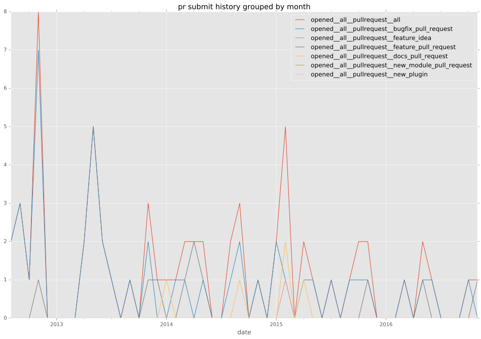

total issue counts
unknown: 2
bugfix pull request: 46
docs report: 1
pullrequest: 65
docs pull request: 5
feature pull request: 12
feature idea: 2
issue: 27
bug report: 24
issue history

pullrequest history

days open by issue type
feature pull request
count: 18
std: 59.1341667161
min: 0
max: 192
median: 39.5
mean: 53.5555555556
all
count: 112
std: 57.351800371
min: 0
max: 347
median: 1.0
mean: 24.2767857143
pullrequest
count: 0
std: nan
min: nan
max: nan
median: nan
mean: nan
docs pull request
count: 9
std: 4.64877522699
min: 1
max: 12
median: 2.0
mean: 4.11111111111
docs report
count: 0
std: nan
min: nan
max: nan
median: nan
mean: nan
bugfix pull request
count: 64
std: 62.1847106936
min: 0
max: 347
median: 1.0
mean: 19.171875
feature idea
count: 0
std: nan
min: nan
max: nan
median: nan
mean: nan
issue
count: 0
std: nan
min: nan
max: nan
median: nan
mean: nan
bug report
count: 19
std: 47.0723593794
min: 0
max: 170
median: 3.0
mean: 25.8421052632
closures grouped by total days open